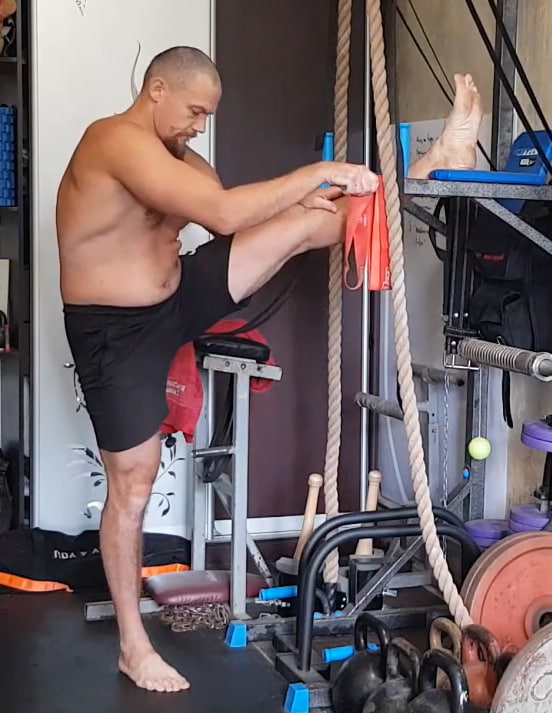
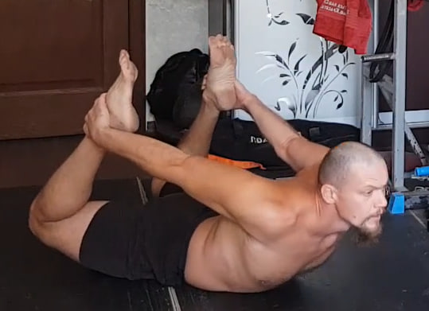

Día 10: piernas y glúteos + isometría y control (sin equipo)
Hoy trabajamos piernas y glúteos, isometría y control, core (abdomen y zona media) con ejercicios simples que caben en una habitación. El objetivo es construir fuerza útil, resistencia y control corporal con el mínimo de equipo.
Prioriza la técnica, respira con control y acumula consistencia: incluso una sesión corta suma cuando la repites día tras día.
0. Estiramiento inicial de la pierna con apoyo elevado
Antes de empezar: haz el calentamiento y repasa la respiración. (No lo saltes.)
Protocolo isométrico: tensión: 12 s + descanso: hasta recuperar la respiración × 10 repeticiones (por lado, si aplica). Más detalles: Respiración.

Coloca una pierna sobre una superficie elevada y estable, manteniéndola completamente recta. Sujeta el pie o la banda elástica y tira suavemente hacia ti para aumentar el estiramiento en la parte posterior del muslo. La pierna de apoyo permanece firme, con una ligera flexión en la rodilla para mantener el equilibrio. Inclina el torso solo lo necesario para sentir un estiramiento profundo sin dolor. Realiza 10 repeticiones por cada pierna. Este mismo estiramiento se repite al final de la sesión.
1. Sentadillas profundas con triple pausa
Seguridad en sentadillas: mantén los talones apoyados y el peso en el medio del pie. Las rodillas deben seguir la dirección de los dedos (sin colapsar hacia adentro). Si eres principiante o sientes molestias, evita que las rodillas se adelanten demasiado y piensa en “caderas atrás” para proteger la articulación.
Protocolo isométrico: tensión: 12 s + descanso: hasta recuperar la respiración × 10 repeticiones (por lado, si aplica). Más detalles: Respiración.

Coloca los pies un poco más anchos que los hombros, con las puntas ligeramente hacia afuera. Baja en sentadilla llevando la cadera hacia atrás y manteniendo el pecho abierto.
Versión básica (dos pausas). Luego sube hasta la mitad de la amplitud (punto medio entre abajo y arriba) y quédate ahí otros 10 segundos . Solo después termina de subir. Este ciclo cuenta como una repetición. Realiza 10 repeticiones .
Versión avanzada de Bronson (tres pausas). Desde la posición de pie baja primero hasta el nivel medio y congélate allí 5–10 segundos . A continuación vuelve a subir al nivel medio y quédate de nuevo 5–10 segundos . Solo entonces sube del todo, sin bloquear las rodillas por completo. Realiza 10 ciclos .
Errores habituales que debes evitar:
- levantar los talones del suelo;
- dejar que las rodillas se colapsen hacia dentro;
- empezar la subida sacando primero la cadera hacia atrás y arriba;
- redondear la espalda y “colgarse” en la zona lumbar;
- acelerar los cambios de nivel en lugar de bajar y subir lentamente;
- contener la respiración durante las pausas. La respiración debe ser tranquila y continua.
Este bloque obliga a trabajar a fondo a la musculatura del muslo, la cadera y el aparato ligamentoso de la rodilla, por lo que conviene tratarlo con máximo respeto.
2. Zancadas con pausa isométrica
Protocolo isométrico: tensión: 12 s + descanso: hasta recuperar la respiración × 10 repeticiones (por lado, si aplica). Más detalles: Respiración.

Da un paso amplio hacia adelante y baja a una zancada, llevando la rodilla trasera casi hasta el suelo. El torso permanece vertical y la rodilla delantera mira estrictamente hacia adelante, sin colapsar hacia dentro.
Después sube con control, cambia de pierna y repite. Haz 10 repeticiones por cada lado .
3. Extensiones isométricas de pierna hacia atrás para glúteo
Protocolo isométrico: tensión: 12 s + descanso: hasta recuperar la respiración × 10 repeticiones (por lado, si aplica). Más detalles: Respiración.

Ponte de pie con la espalda completamente recta, evitando inclinarte hacia adelante. Lleva una pierna recta hacia atrás sin doblar la rodilla y sin arquear la zona lumbar. La tensión debe sentirse principalmente en el glúteo de la pierna que se mueve.
En la posición máxima de extensión aprieta el glúteo con toda tu fuerza durante 10 segundos, respirando de forma tranquila. Vuelve a la posición inicial con control y repite. Realiza 10 repeticiones por cada pierna.
4. Elevación de rodilla al pecho de pie
Protocolo isométrico: tensión: 12 s + descanso: hasta recuperar la respiración × 10 repeticiones (por lado, si aplica). Más detalles: Respiración.

Ponte de pie con el torso recto. Eleva una rodilla hacia el pecho y abrázala con ambas manos, acercándola lo más posible al cuerpo. La espalda permanece larga y vertical, sin inclinarse hacia adelante ni redondearse.
Realiza 10 repeticiones por pierna .
5. Saltos estrella desde sentadilla
Seguridad en sentadillas: mantén los talones apoyados y el peso en el medio del pie. Las rodillas deben seguir la dirección de los dedos (sin colapsar hacia adentro). Si eres principiante o sientes molestias, evita que las rodillas se adelanten demasiado y piensa en “caderas atrás” para proteger la articulación.


Parte desde una sentadilla profunda con las manos cerca del suelo. Desde la parte baja realiza un salto explosivo hacia arriba abriendo brazos y piernas en forma de estrella. Aterriza suave sobre la punta de los pies, vuelve inmediatamente a la sentadilla profunda y repite.
El movimiento debe ser elástico y continuo, manteniendo el abdomen firme y evitando que la cadera se desplace demasiado hacia atrás en la subida. Completa 10 repeticiones.
6. Saltos en posición de plancha


Comienza en posición de plancha con los brazos extendidos y el cuerpo en línea recta desde la cabeza hasta los talones. Desde ahí salta llevando los pies hacia adelante, colocándolos debajo del pecho, y luego salta de nuevo hacia atrás para volver a la plancha.
Mantén el abdomen firme, evita que la cadera se hunda o suba demasiado y controla cada aterrizaje con las puntas de los pies. Realiza 10 saltos seguidos con un ritmo elástico y constante.
7. “Gato” dinámico para la columna


Acuéstate boca abajo con las manos a los lados del pecho. Empuja el suelo y eleva el torso hacia arriba, estirando la parte frontal del cuerpo y arqueando la espalda como en la postura de la cobra. La mirada se dirige ligeramente hacia arriba sin tensar el cuello.
Después desciende con control, acercando el pecho al suelo sin perder la tensión del cuerpo. El movimiento debe ser suave y continuo, evitando que la zona lumbar colapse. Realiza 10 repeticiones.
8. Balanceos en postura de “arco”

Acuéstate boca abajo y flexiona ambas rodillas. Toma los tobillos con las manos desde afuera y eleva el pecho del suelo, entrando en una postura de arco: las piernas tiran hacia atrás y hacia arriba, y la parte frontal del cuerpo se abre.
Mantén el abdomen activo y la mirada al frente. Desde esta posición realiza balanceos suaves, usando la tensión de la espalda, los glúteos y la flexión de las piernas. El movimiento debe ser controlado, sin golpes, y sin colapsar la zona lumbar. Completa 10 balanceos.
9. Inclinaciones hacia el suelo con piernas rectas

Colócate de pie con las piernas completamente rectas y los pies al ancho de las caderas. Inclina el torso hacia adelante llevando la cadera hacia atrás e intentando tocar el suelo con las manos sin doblar las rodillas.
Deja que el peso del torso caiga de forma natural, sin tensar el cuello. Después vuelve a ponerte de pie estirando todo el cuerpo. Realiza 10 repeticiones completas: inclinación y extensión.
Cierre
Experimenta: ajusta ángulos, rango y puntos de tensión hasta encontrar la versión que te sienta bien. Lo importante es que el entrenamiento sea sostenible y te dé ganas de volver. Crea condiciones para entrenar con regularidad, aunque sea poco: 10 minutos cuentan. Esta rutina está pensada para eso: que puedas cumplir incluso con poco espacio, poco tiempo y circunstancias difíciles.